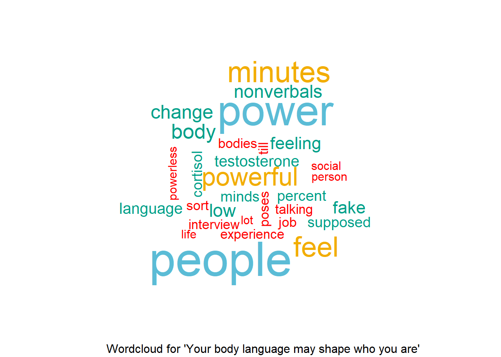

TED Talks are a global platform that hosts a series of influential conferences where experts, innovators, and thought leaders share their ideas and experiences through short, powerful speeches. The acronym TED stands for Technology, Entertainment, and Design, but the talks cover a wide range of topics, including science, business, art, education, and more.
TED Talks are more than just informative speeches. They are emotional journeys that leave the audiences feeling inspired, hopeful, and ready to take action. By exploring the patterns and techniques found within these transcripts, I hope to gain a deeper understanding of how TED Talks effectively communicate their messages and ultimately contribute to the spread of captivating ideas.
In my analysis, I will go over how I collected the data, cleaned the data and performed text analysis.
For the data scraping part, I scraped URLS, Titles, Dates, Likes and Transcripts from https://www.ted.com/talks
There are almost 6000 speeches from 2006 to 2023. One thing to note from the code for web scraping, the output I got for getting transcripts includes many websites background information that I don’t need for my analysis. Therefore I split the text into tokens and separated the actual transcripts from other words then save it in the list. The final outcome has two datasets, one includes just the titles, dates, and likes, the other includes all the unnested tokens, each match with the sppech title, dates and likes.
#URLs-------------
ted_url <- "https://www.ted.com/talks"
# Iterate from the 1st to the 166th page
urls <- list()
for(i in 1:166){
url2 <- paste0(ted_url,"?page=",i)
page <- read_html(url2)
links <- html_elements(page, "#browse-results .ga-link") %>%
html_attrs() %>%
tibble() %>%
rename(web = ".") %>%
unnest(cols = web) %>%
filter(str_detect(web, "/")) %>%
mutate(url2 = paste0("https://www.ted.com", web)) %>%
distinct() %>%
pull(url2)
urls[[i]] <- links
}
# The 'urls' variable now contains all the scraped URLs from pages 1 to 166.
url_data <- urls %>% bind_rows()
write.csv(url_data, "url_data.csv", row.names = FALSE)
#Title-------------
titles <- list()
for (i in 2:5953) {
tedtitles <- read_html(urls[[i]]) %>%
html_elements(".mr-5") %>%
html_text()
titles[[i]] <- tedtitles
}
title_data <- titles %>% bind_rows()
write.csv(title_data, "title_data.csv", row.names = FALSE)
titles <- read_csv("title_data.csv")
#Date-------------
date_list <- list()
for (i in 1:166){
url2 <- paste0(ted_url,"?page=",i)
date <- url2 %>%
read_html() %>%
html_elements(".meta__val") %>%
html_text() %>%
tibble() %>%
rename(date=".")
date_list[[i]] <- date
}
date_list2 <- date_list %>%
bind_rows()
date_list2 <- date_list2 %>% slice(-(1:3))
date_list2 <- date_list2 %>% mutate(date=str_replace(date,pattern="\n",replacement=""))
write_csv(date_list2, "date_data.csv")
#Transcript-------------
urls$transcript_url <- paste0(urls$., "/transcript")
tran_list <- list()
first_list <- list()
second_list <- list()
first_half <- list()
final <-list()
# I noticed that the word "transcript" always appear before the actual transcript and the pattern "embed.ted.com" appears at the end of the transcript. I decided to find the location of the first "transcript" and "embed.ted.com" then extract all the text in between.
for (i in 1:5953){
tran_list[[i]] <- urls$transcript_url[[i]] %>%
read_html(".css-82uonn") %>%
html_text() %>%
tibble() %>%
unnest_tokens(., input=".", output=word)
first_list[[i]] <- min(which(tran_list[[i]] == "transcript"))
}
for (i in 1:5953){
first_half[[i]] <- tran_list[[i]] %>%
slice(-c(1:first_list[[i]]))
second_list[[i]] <- min(which(tran_list[[i]] == "embed.ted.com"))
final[[i]] <- first_half[[i]] %>%
slice(-c(second_list[[i]]:nrow(first_half[[i]]))) %>%
anti_join(stop_words) %>%
anti_join(new_stops) %>%
mutate(title = titles$.[[i]]) %>%
mutate(date = dates$date[[i]])
}
final_data <- final %>% bind_rows()
write_csv(final_data, "final_data.csv")
#Likes-------------
like_list <- list()
likes <- list()
for (i in 5872:5953){
like_list[[i]] <- urls$.[[i]] %>%
read_html() %>%
html_elements("#maincontent .items-center.opacity-100") %>%
html_text()
likes[[i]] <- like_list[[i]][[3]] %>%
str_extract("\\d+(\\.\\d+)?") %>% # Extract numbers with optional decimal places
as.numeric()*1000
}
Likes <- data.frame(LikeCount = unlist(likes))
#Views-------------
view_list <- list()
for (i in 5617:5953){
view_list[[i]] <- urls$.[[i]] %>%
read_html() %>%
html_elements(".truncate") %>%
html_text() %>%
str_extract("\\d{1,3}(?:,\\d{3})*(?=\\sviews)")
}
Views <- data.frame(Views = unlist(view_list))
Views$Views <- as.numeric(gsub(",", "", Views$Views))Since I scraped all the variables separately, I did a left join to combine the data then saved them in csv files for future analysis. I also extract year from the date column for further analysis.
final_data$date <- my(final_data$date)
combined_data <- cbind(titles, Likes, dates, Views) %>% rename(Title=".")
combined_data$date <- my(combined_data$date)
combined_data$year <- format(combined_data$date, "%Y")
final_data <- final_data %>%
left_join(combined_data, by = c("title" = "Title"))
write_csv(final_data, "final_data.csv")
write_csv(combined_data, "combined_data.csv")This dataset includes titles, likes, date, and year.
combined_data %>% head()## # A tibble: 6 × 5
## Title LikeCount date year Views
## <chr> <dbl> <date> <dbl> <dbl>
## 1 The year without summer 6200 2023-05-01 2023 240294
## 2 3 ways your money can fight climate change 13000 2023-05-01 2023 547860
## 3 What the world can learn from China's innov… 16000 2023-05-01 2023 658698
## 4 The urgent risks of runaway AI -- and what … 20000 2023-05-01 2023 799269
## 5 Why were there three popes at the same time? 15000 2023-05-01 2023 564808
## 6 Does working hard really make you a good pe… 21000 2023-05-01 2023 833900This dataset includes word (unnested token), title, date, likes, and year.
final2 %>% head()## # A tibble: 6 × 6
## word title date LikeCount year Views
## <chr> <chr> <date> <dbl> <dbl> <dbl>
## 1 april The year without summer 2023-05-01 6200 2023 240294
## 2 10th The year without summer 2023-05-01 6200 2023 240294
## 3 1815 The year without summer 2023-05-01 6200 2023 240294
## 4 moments The year without summer 2023-05-01 6200 2023 240294
## 5 sun The year without summer 2023-05-01 6200 2023 240294
## 6 disappear The year without summer 2023-05-01 6200 2023 240294There are 5953 speeches in the data set.
nrow(combined_data)## [1] 5953There are over 4 million words after I unnested all 5953 transcipts.
nrow(final_data)## [1] 4010210Remove more stop words from the data and save it in a new dataframe
stop_words2 <- tibble(word = c("var", "ve", "_vwo_code", "activegroupsloaded","categoriesconsentedto",
"const", "eslint", "window.onetrustactivegroups", "use_existing_jquery",
"library_tolerance","hide_element","settings_tolerance","ll",
"__html","__userhasconsentedtotargetingcookies","c0004","dangerouslysetinnerhtml",
"embed.ted.com","onetrustactivegroupsloaded","optanonwrapper",
"react's","interactioncounter","interactionstatistic","interactiontype",
"userinteractioncount","watchaction","window.dispatchevent",
"window.location.reload","window.onetrust.onconsentchanged",
"window.onetrustactivegroups.includes","613676","2500","1","0",
"d.createelement","use_existing_jquery:function",
"library_tolerance:function","finish:function","_vis_opt_path_hides",
"_vwo_code.finish","d.getelementbyid","e.parentnode.removechild",
"apos","quot","don","2000","account_id","1.3","is_spa","underscore","underscores",
"finished:function","load:function","t.fetchpriority",
"d.getelementsbytagname","t.innertext","t.onerror"))
final2 <- final_data %>%
anti_join(stop_words2)
final2$year <- format(final2$date, "%Y")
write_csv(final2, "final_data2.csv")combined_data %>%
group_by(year) %>%
count() %>%
ggplot()+
geom_col(aes(x=year, y=n),fill = "steelblue") +
labs(x = "Year", y = "Number of Ted Talks") +
ggtitle("Number of Ted Talks Each Year") +
theme(plot.title = element_text(hjust = 0.5))max_views<-combined_data %>%
group_by(year)%>%
slice(which.max(Views))%>%
ungroup()
max_views %>%
plot_ly(x=~year, y=~Views, hoverinfo="text", text=~paste("Title:", Title, "<br>Viewcounts:", Views))%>%
add_trace(type = "scatter", mode = "markers+lines",
marker = list(color = "deepskyblue", size = 10), line = list(color = "steelblue")) %>%
layout(title=~"Most Viewed Ted talk by year")max_views %>% top_n(Views, n=3)## # A tibble: 3 × 5
## Title LikeCount date year Views
## <chr> <dbl> <date> <dbl> <dbl>
## 1 Do schools kill creativity? 2200 2006-06-01 2006 75127227
## 2 Your body language may shape who you are 2000 2012-10-01 2012 68428405
## 3 Inside the mind of a master procrastinator 2000 2016-03-01 2016 67304784We can see that in the most popular speech which has over 75 million views since 2011, the most common words are education, people, school and system.
pop1 <- final2 %>%
filter(title=="Do schools kill creativity?") %>%
filter(!grepl("laughter",word))
set.seed(2021)
pop1 %>%
count(word, sort=T) %>%
with(wordcloud(word,n,max.words=50,color=wes_palette("Darjeeling1"))) %>%
title("Wordcloud for 'Do schools kill creativity?' ") pop2 <- final2 %>%
filter(title=="Your body language may shape who you are") %>%
filter(!grepl("laughter",word))
set.seed(2)
pop2 %>%
count(word, sort=T) %>%
with(wordcloud(word,n,max.words=30,color=wes_palette("Darjeeling1"))) %>%
title("Wordcloud for 'Your body language may shape who you are' ") 
pop3 <- final2 %>%
filter(title=="Inside the mind of a master procrastinator")
set.seed(1234)
pop3 %>%
count(word, sort=T) %>%
with(wordcloud(word,n,max.words=40,color=wes_palette("Darjeeling1"))) %>%
title("Wordcloud for 'Inside the mind of a master procrastinator' ") This is the comparison word cloud for to see the common words for positive and negative sentiment.
t_bing<-final2 %>%
inner_join(get_sentiments("bing"), by="word", relationship="many-to-many")%>%
count(sentiment, word)%>%
spread(sentiment, n, fill = 0) %>%
data.frame(row.names = "word")
set.seed(2023)
comparison.cloud(t_bing, max.words=40, title.size=1.5)This is a radar chart for sentiment analysis. There are 8 emotions (Joy, Sadness, Surprise, Trust, Anger, Anticipation, Disgust and Fear) and 2 sentiments (Positive and Negative) based on NRC lexicon. Radar chart is useful when comparing many documents by year. We can see that the most common sentiment is Trust followed by Anticipation, both are aligned with Ted Talks value being inspiring and motivating.
sentiment_spread<-final2%>%
inner_join(get_sentiments("nrc"), by="word", relationship="many-to-many")%>%
filter(!grepl("positive|negative", sentiment))%>%
mutate(index=year)%>%
count(sentiment, index)%>%
spread(index, n)
chartJSRadar(sentiment_spread)I think 9 topics is the appropriate number for building the model as it reflects each topic clearly and we can identify the theme for each one of them. I roughly categorized these themes as follows:
ted_dtm <- final2 %>%
count(title, word, sort=T) %>%
cast_dtm(document = title, term = word, value =n )
ted_lda <- LDA(ted_dtm, k = 9, control = list(seed = 1234))
saveRDS(ted_lda, "ted_lda.rds")ted_lda <- readRDS("ted_lda.rds")
ted_topics <- tidy(ted_lda, matrix = "beta")
top_terms <- ted_topics %>%
filter(!grepl("people",term)) %>%
filter(!grepl("window",term)) %>%
filter(!grepl("return",term)) %>%
filter(!grepl("didn",term)) %>%
group_by(topic) %>%
slice_max(beta, n = 10) %>%
ungroup() %>%
arrange(topic, -beta)
top_terms %>%
mutate(term = reorder_within(term, beta, topic)) %>%
ggplot(aes(x =beta , y = term, fill =factor(topic))) +
geom_col(show.legend = FALSE) +
facet_wrap(~factor(topic) , scales = "free" ) +
scale_y_reordered()Analyzing Ted Talks transcripts is really interesting and fun for text analysis. It provides large amount of texts and a variety of topics. The speeches themselves are concise and easily comprehensible, allowing for a smooth understanding of the content. Thorough my analysis, I can see that the speakers have done an exceptional job in staying focused on their respective topics, while also captivating the audience with their engaging and humorous delivery. The word cloud visualization provides valuable insights into the topics and key terms emphasized by the speakers. Topic modeling also successfully categorized and characterized each talk, offering a wide range of knowledge for individuals interesting in diverse subjects. I would definitely recommend anyone who is new to text analytics to try working with this type of data! Just be mindful that web scraping could be a little tricky!